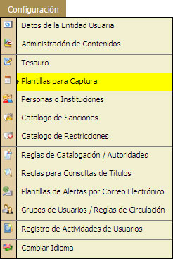
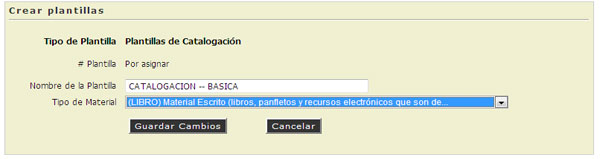
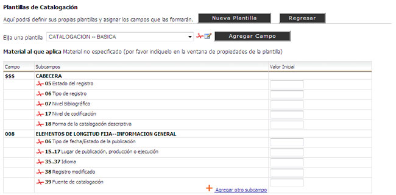
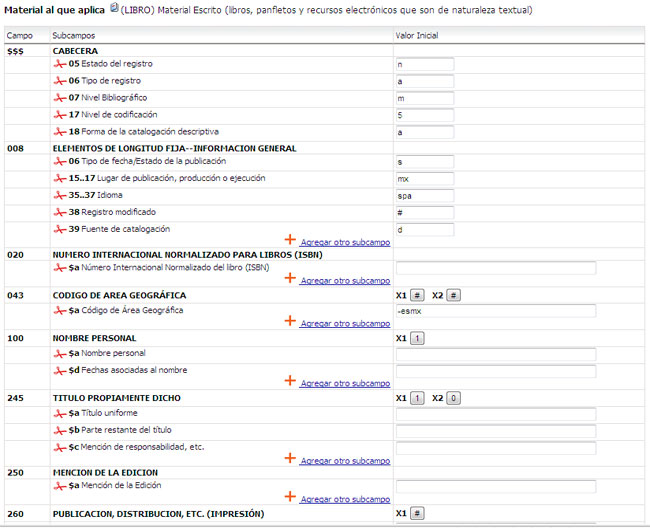

5.4. Plantillas para Captura.
REQUISITO: El administrador deberá tener conocimiento básico del formato MARC.

- Seleccionar la categoria de la Plantilla de Captura.
- Hacer "Clic" en la opción [Nueva Plantilla].
- Escribir el Nombre de la nueva Plantilla.
- Seleccionar el Tipo de Material.
-

- Hacer "Clic" en la opción [Guardar Cambios].
- Seleccionar la Plantilla Creada.
- Se iniciará la plantilla para realizar la modificación o adaptación de la misma.

- Se agregarán los campos necesarios para la plantilla en la opción [Agregar Campo].
- Los subcampos podrán ser agregados en cuanto aparezca la opción [Agregar Subcampos] o podrán ser agregados en el momento de la captura de la Catalogación de algún Material.
- Aqui se muestra un ejemplo de una plantilla capturada con formato MARC.

Vea También: Catalogación.